See the DOE report! Now Everyone is recognizing the advantages of Simple 120v charging at work.
And by June 2016, the Federal Policy for 120v outlet charging is in place ($6/payperiod - $15 per month!)
Bob Bruninga, PE
IEEE National Committee on Transportation and Aerospace
Maryland EV Infrastructure Council (public member)
Electric Vehicle Association of DC/MD/VA
last name at usna dot edu
We should now be able to PAY-in to PLUG-in at USNA. (but still cannot!)
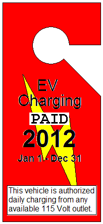 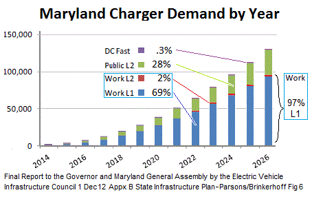
This can be implemented sensibly as a NO COST project! . . . . . . . .
Fighting this since 2008, nothing but government excuses. Since 2016 new administration,
most initiatives at DOE for charging at work were watered down or eliminated.
(the original links are dead. THis is all that remains)...
See how GAO ruling prohibited the purchase of charging stations
See why GAO prohibition should not apply to L1 (120v outlet) charging
See DOE's
Workplace Charging Challenge for charging-at-work
DOE Policy 2017 - ExecutiveOrder 13693 on Sustainabililty.
and
implementing instructions(see page 42).
See how
Congress Law 112-170 allowed itself to charge while ignoring everyone else (Unitl NOW, 5 years later)!
120v outlets (L1) are all we need at Work: See why Plugin America concludes that L1 (120v) charging makes the most sense, and L2 and Fast charging simply are unsustainable for employee charging when simple 120v outlets and monthly payment can do the same job at 1% of the cost. And see how public charging is not as important as people thought.
Federal Executive Order 13514
orders a clean energy economy including reducing emissions due to employee commmuting...
(which is 80% of government transportation emissions!)
and the
new order of
19 March 2015 (section 7(f) ordering... policies... to support workplace charging.
References: For background see the page:
EV Charging Everywhere!
And most revealing: EV Misinformation misunderstood by gas-tank legacy thinking!
For Technical justification, see my original 2012
IEEE Paper on L1 Charging.
Download the Charging-at-work Presentation given at the DC EV Forum 12/12/11.
Download the EV Position Paper
on Charging Infrastructure (draft).
Now in Fall, 2018, Everything is in Place! Not only does the law and procedures now encourage Federal Employees to drive EV's and to be authorized to plugin after paying a $6 per pay period allotment to receive a Payin-to-Plugin placard (upper right), but at USNA we now have an all new garage that is pre-wired for EV charging. As shown below, a simple row of outlets can be installed on the lower deck and upper deck for EV charging at minimum cost. This is exactly what the FAST Act envisioned.
See the USNA proposal
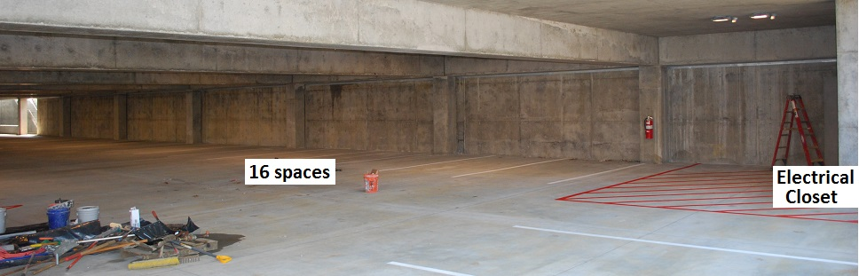
The Lower deck would be preferred in the summer to reduce air conditioning load when driving home and in the winter, the upper level outlets would be preferred to take advantage of solar warming to reduce heating load.
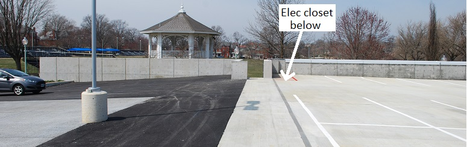
Shared spots, open to all: Gas guzzlers should not feel threatened. THese EV charging outlet spaces will have a sign that says "EV CHARGING until 8:15" making them first come first served by EV drivers who choose to get here early, but then to not waste spaces as the last commuters arrive and the garage fills up. These spots were chosen to be the least preferred spots that are the last to be used.
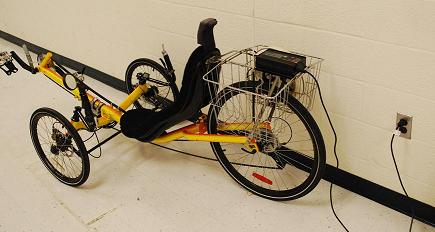 The Maryland EV Report concludes that over 97% of EV charging at work can use 120v outlets: The most revealing aspect of the above Maryland report on charging demand is common sense. Employee EV's don't need fast expensive L2 chargers at work. They simply need an outlet to plugin to while parked. But government bureaucrats mostly do not own EV's and focused (by their gas-tank/gas-station legacy thinking) on the fast-expensive public charging model (only 3% of the charging-at-work need) and misinterpreted the GAO ruling prohibiting the purchase of those expensive L2 chargers. They wrongly concluded it also blocks any local initiative to allow EV charging-at-work by federal employees and to allow us to pay for the electricity using local procedures.
Reimbursement of Employee use of Government Electricity is covered by USNA INST 7820.3: This instruction allows pre-payment of estimated costs of facilities usage in advance, including reimbursement for the use of utilities by individuals for non-official purposes (weddings in the chapel, using the hobby shop, charging one's EV, etc). The process should work if you simply submit the required form and the annual estimated cost of daily charging for a year. Here is a copy of the instruction. Note specifically paragraph 3.d, 4.c, 5.a and enclosure 8.
See an example copy of the enclosure 8 form submitted for an Electric Bike (still working its way up the chain of command since May 2012). It contains the calculations for estimating the annual cost to daily charge a car, a motorcycle or a bike. See also the copy of the form for my car submitted on 15 July 2013. We should be able to just submit the form along with a check for the estimated annual costs to our chain of command. The form contains a copy of a Charging Pass to affix to the vehicle so everyone can see you have paid and you are authorized to charge from any available outlet.
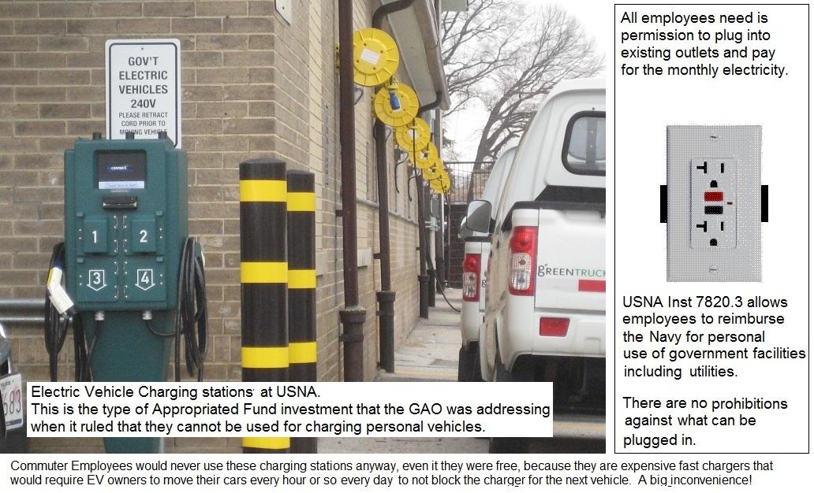 This sample placard (when PAID) (above right) will allow the authorized EV owner employee to plug into any convenient 120 VAC outlet found at USNA that is -safely- located within a few feet of an existing -valid- parking spot. No special chargers or installation is required. At least 9 such exterior 120 volt standard outlets exist (at least equal to the number of EV's that work here for the next few years!) as shown below. There are also dozens of electric boxes on the light poles around the fields that an electrician in a day could add additional outlets. The new 2016 authorization allows for such minor NEW installations since the amortized cost of these new outlets are already included in the recommended $3/week prepayment. (photo top right).
Why the GAO Ruling against personal use of Government Charging Stations does not apply!
The image at right shows the USNA official EV "charging stations" for its government fleet... But these charging stations have nothing to do with the Charging need for Employees! They were purchased with appropriated funds and should not be used by employees (as prohibited by the GAO ruling). Besides, no employee would want to park there anyway and walk a half mile across campus when there are plenty of other standard 120v outlets nearer where they park that can do the same thing. And also when charging from a Charging station the owner has to come move their car an hour later to share the expensive charging asset. Charging stations make no sense for employee commuting when simple 120v outlets anywhere on the Yard will do. 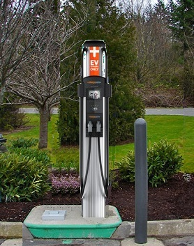
The GAO ruling specifically prohibited the personal use of expensive Charging Stations purchased with Appropriated funds. This makes perfect sense... But has nothing to do with an Employee plugging in his commuting appliance (electric scooter, bicycle, motorcycle or car) into an existing 120v convenience outlet, and using existing procedures to pay the cost for the privilege of charging. Especially when the procedure for using governmnet facilities (including utilities for personal use) exists and is well established (USNA Inst 7820.3). See why the GAO ruling does not apply.
...
EXISTING AND FUTURE POTENTIAL FOR EV COMMUTING, PARKING and CHARGING at USNA:
In September 2014, USNA Installed a single L2 EV charging post behind the Navy Exchange over at the Naval Station similar to the image at right. While this is a great investment for the future of EV's for retired military shopping at the exchange, it does nothing for encouraging daily EV commuting to the Academy. It is just a perpetuation of the gas-tank/gas-station legacy thinking that does not realize that longer distance commuting employees (those that can cut emissions the most) need to top-off their charge every single day while parked all day at work in order to complete their round-trip home.
The Naval Academy already has existing outlets suitable for charging as many as nine daily commuting EV's as shown in the map below.
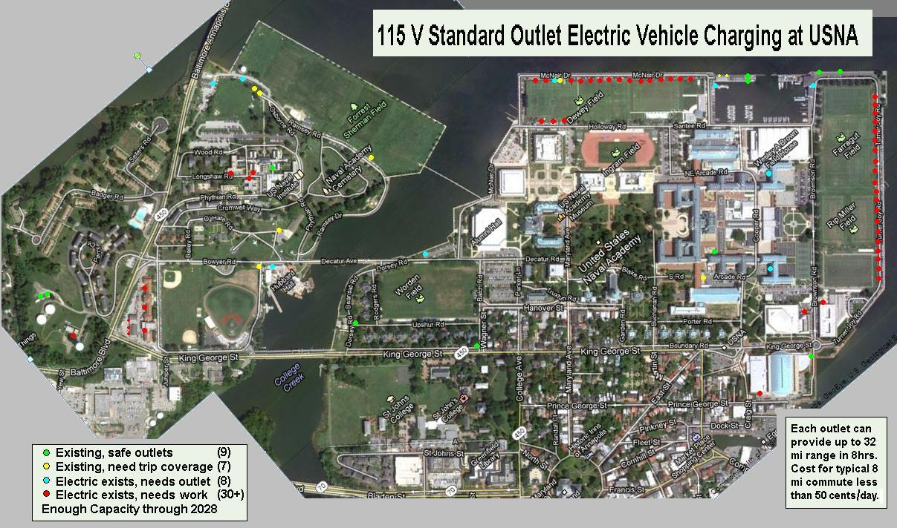
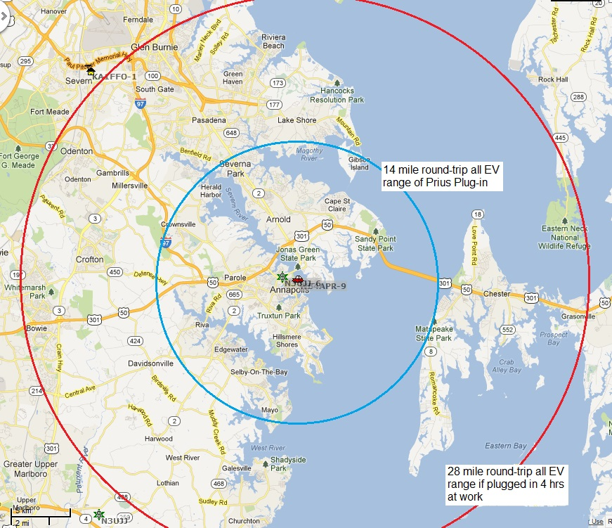 USNA has great EV commuting potential! . . . The Outlets exist, as shown in the USNA map at right. The outlets are safe to use, and Instructions exist for personal reimbursement for use of USNA Government facilities including utilities. Further, this process is entirely within the full spirit and objective of the Administrations' Federal Executive Order, the DOE's workplace Charging Challenge, and our national imperative to get off foreign oil and reduce our carbon emissions. The impact of plugging-in at-work is significant for extended the all-EV driving range of plug-in hybrids as shown below:
All-EV range if Plugged in at-work: The map shows how the 100% electric (zero emissions) driving range of the Plug-in Prius for example is doubled if the car is simply plugged into an existing outlet while parked at work. The range of the 40 mile Volt would be almost triple the area of this circle if it were plugged in at work at USNA.
Federal Executive Order 13514 orders a clean energy economy... by involving Federal employees in achievement of these goals. Specifically, by using low green house gas emitting vehicles, by actively supporting lower-carbon commuting... and by implementing innovative practices to address green house gas emissions... This is what we employees are trying to do. It is estimated that 80% of the Federal Government's ground transportation emissions comes from employee commuting!
Allowing Payin-to-Plugin will accomplish (for the 97% charging at work need) far more than the purchase of expensive $10,000 fast EV charging stations (only 3% of the need). FAST stations are not not needed at home (8 hours sleeping) or work (8 hours working) for employees. Convenient 120 volt charging at work can potentially double the effective commute range of some EV employees. Expensive L2 Quick chargers at work, on the other hand, are generally idle 83% of the time! (see analysis below) because cars charge in an hour or so and then sit idle. Further, managers do not want employees going to the parking lot every hour to play musical cars to share a few expensive fast chargers that can fully replenish an average commuter EV in under 1 hour! . . . Let them plugin to any 120v outlet while parked and get the charge they need instead.
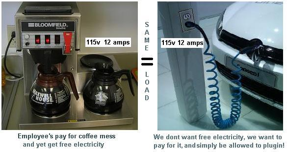 An EV on 120v equals a coffeepot: The Employer/Employee relationship already exists for our pay-as-you-go coffee messes, and here the employee's Electric car plugged into a 120v outlet is drawing no more power than a coffee pot. In addition, the EV owner is even willing to fully pay for the electricity up-front compared to the free-loading coffee mess members.
..
The cost for 21 workdays a month of electricity from any standard 120 volt 15 amp circuit to make up for an incoming commute is shown in the figure below right. Fully 50% of all commuters would use less than 54 cents a day while charging at work as shown in the graphic to the right. And 2 out of every 3 use less than 81 cents. Employees should be able to purchase monthly charging passes based on their home-of-record distance to work. Electric motorcycles might pay $5/mo and maybe $1/Mo for an electric bike. Longer commutes could pay more.
WE NAILED IT! And true to our 5 year maintenance of this web page, the cost arrived at by the Government in its new 2016 L1 charging authorization is very close to our recommendation. We had receommended about $15 a month for a 15 mile commuter and they simply averaged everything out to a fixed rate of $3 a week. This seems to cover 70% of all commuters.
..
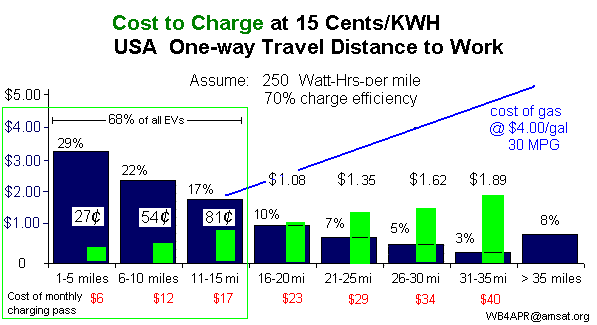 Power drawn is Self-Limiting. This arrangement cannot be abused since an EV simply cannot draw more than about $1.80 a day from a 120 volt 15 amp outlet during an 8 hour day. Any more current and the 15 amp breaker will trip. If one tries to stay plugged in for say 16 or 24 hours to draw more government/company electricity than he has pre-paid, he runs up against the problem of a full battery! Once his car's battery is fully charged (which for 2/3rds of all EV's is under 4 hours) then no more power can be drawn from the outlet! Assuming the EV owner always charges up at home the night before, then the charge time at work on a 120v outlet is directly proportional to his one-way distance to work as shown in the next graphic to the lower right (red bars).
Charge less than:
This is SIMPLE and NO COST. USNA could have the blank forms available at the Pass-N-Tag office and could collect the monthly or bi-weekly payday fee easily. This will show a commitment to Electrification of Transportation overnight. Enough outlets EXIST NOW for the next year or so. My form has been submitted up the chain of command (May 2012). Let's see if it is approved to let us Payin-to-Plugin.
FULLY IN CONFORMANCE WITH FEDERAL EXECUTIVE ORDER 13514: This executive order mandates the federal government and employees to limit energy waste and to reduce green hous gas emissions including from employee commuting. It is our number one national security issue and an imperative to get off our $1 Billion dollar a day addiction to foreign oil which funds dictators, despots, and political corruption in unsatable areas of the world. Stoping our waste of precious limited oil in daily commuting by switching to clean renewable energy fueled EV's is one of the best steps to achieve this goal. An EV is not for everyone, but it is IDEAL for commuting and local travel and drives on 100% North American energy.
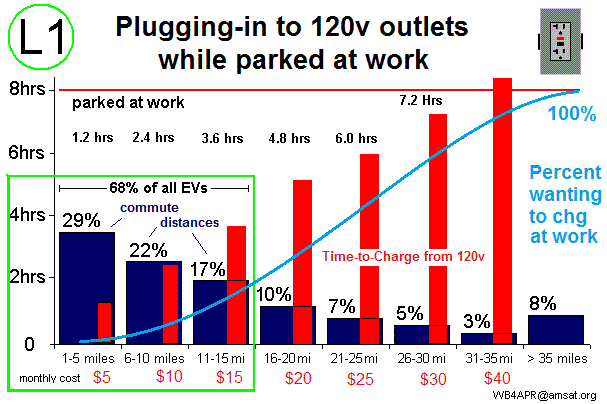 For Example, this page evolved from my 20 years of lobbying at USNA to get permission to pay-for and plug into the outlet sitting right there within 6 feet of my car parking space across Dewey Field (see top photo). But no one seems to be able to figure out how to take my $15/month money and grant that authority until today (Jun 2016), even though USNA has always had a means for paying for government utilites in the 7820.3 Instruction!
Range Anxiety and Public Charging Infrastructure: There is too much hype and media hand wringing over EV range. There is no need for all this silliness. People who have range anxiety, do not have a garage or outlet at home, or live too far from work for a plug-in, simply should not be considering an EV at this time. This still leaves 205 million drivers that can use an EV without any concern over charging infrastructure (charging at home and at work).!... Over 67% of ALL americans live in single family detached homes. This means that over 205 MILLION car owners already have an EV charging point at home (any 120v outlet) and the current USA GOAL is only looking for 1 million EV's by 2015. We can double the number of EV wannabees simply by making it easy to charge during the 8 hours at work too. And we don't need no stinkin' $6000 quick charger to do it!
Talking Point: Level 1 standard 120v outlets at-work can fully charge over 90% of all commuters! (see L1 chart at right). 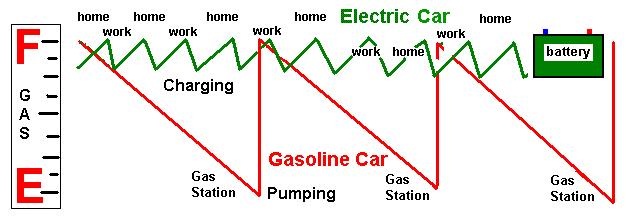
Forget the Gas Tank Model! A Battery is not a Gas tank! EV's do not run-to-empty and then charge-to-full. That is Gas-Tank legacy thinking. An EV is not a direct replacement for every gasoline car. An EV is a commuting appliance like a laptop or cell phone. You plug it in at home and at work, or anywhere it sits for long periods... (at home and at work!) In fact, charging-to-full and running-to-empty is not good for long EV battery life. The ideal charging profile is something like charging to 80% and then running down to about 40%. Charging over 8 hours at home and at work on L1 is a great way to do that. In addition, it gives you an afternoon start on your errands with a fully charged battery.
.
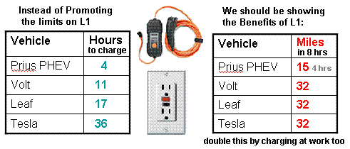
Focus on the Benefits: Instead of focusing on how long it takes to fully fill an EV battery from L1 home charging (we dont run it to empty every day anyway!), we should instead focus on how many miles-per-charge we get during an 8 hour charge at Home and at Work. Since any EV will gain about 32 miles of charge during 8 hours, that can give EV's that charge at work a total daily range of 64 miles - more than a single charge can do in a Volt for example. Don't get Distracted by "Issues" that only effect 3% of Charging! Almost all of the issues and problems we frequently hear about charging infrastructure apply only to L2 charging. All of these issued vanish with L1 (120v) charging. Few if any issues are involved with just plugging in an EV like plugging in a coffee pot. And many of the outlets already exist!
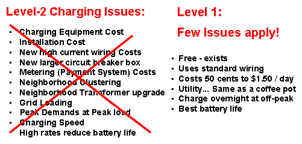
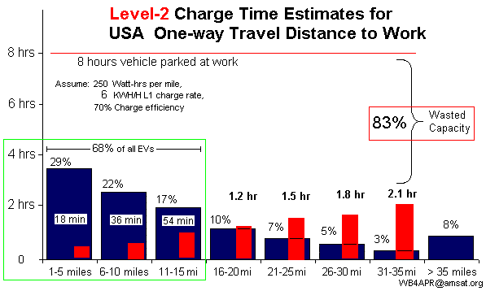 LEVEL-2 QUICK CHARGERS (in the wrong places): Quick L2 chargers should be at QUICK places, such as rest stops, minimarts, airport cell-phone waiting areas, kiss-and-ride lots, shopping centers... Places where cars rarely sit for more than 30 minutes to an hour. L2 chargers are cost effecive if used by a lot of cars every hour or so. See the graph at right. Level-2 chargers, however, are NOT cost effective when one car sits in the spot for 8 to 10 hours a day when the car is usually fully charged in the first hour! Level-2 chargers in Daily (8 hour) parking lots are wasting 83% of their capacity by being blocked from other users. Besides, who is going to typically use a public charger when the charging costs are often 3 to 5 times the going rate for electricity? That's like gas cars driving around looking for the opportunity to fill up at $10 to $15 per gallon for gas! (they won't do it except in extremis, and that is not a good business model for the long term).
LEVEL-1 CHARGERS AT WORK: On the other hand, enabling the use of 120v standard outlet Level-1 chargers at work should be the #1 goal of EV Infrastructure roll-out in the USA. And even with all the motivation, it took the Federeal Government 5 years to get around to it. As shown at right, installing level-2's at work is a waste of resources. However, enabling the use of 120v outlet charging (Level-1) can meet the charging needs of at least 90% of all USA commuters with EV's and still only use 37% of Level-1 charging capacity! As shown here, these 90% of all EV commuters simply plugged into a 120v outlet at work, would leave work fully charged in under 8 hours.
One Million EV's by 2015: If you think 1 Million EV's is a small number, remember, there are over 400 different models of gas cars being sold by 45 manufacturers to meet the broad distribution of public demand for vehicles that match their personal need. Even the #1 selling gasoline vehicle in America only sells to 4% of Americans! By the same token, the EV is not for everyone! On the other hand, if only 1% of drivers bought an EV, that would be 3.5 million EV's! Since 67% of ALL drivers already have an L1 charger port at home (120 VAC outlet), this simple proposal to provide L1 outlets at work would INSTANTLY DOUBLE THE RANGE of every EV in the hands of employees and at NO COST to taxpayers. Even Convenience stores are installing 120v charging outlets.
Existing Outlets are Available: Of course, the number of existing available 120v outlets near parking places is small, but so also are the number of EV cars today. (Seven at USNA in 2016). For the USA goal of 1 Million EV's, that would be about 11 cars at the Naval Academy, yet I counted over two dozen available outlets or power boxes adjacent to parking places (where a $15 outlet could be added) as shown here:
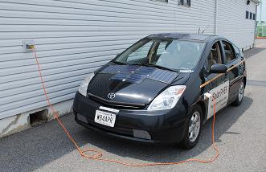 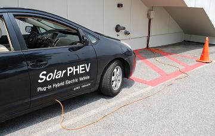 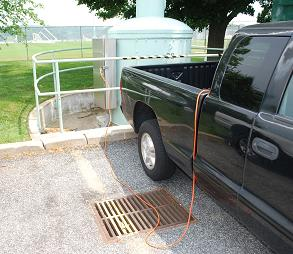 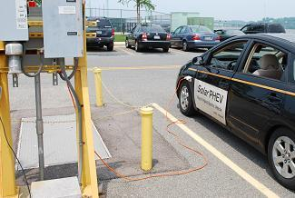 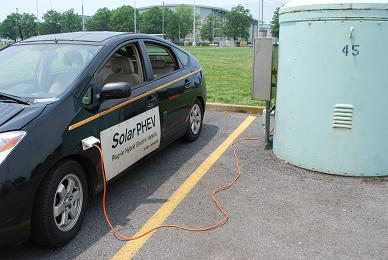 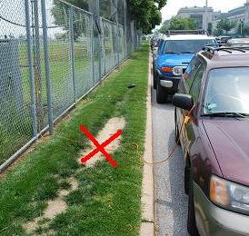
Enabling this Level-1 Pay-in to Plug-in process to use those existing outlets will JUMP-START the acceptance of electric cars. No one is getting free electricity here, the people pay for the placard, and that pays the 60 cents a day for the electricity. The only concern might be unsafe practice with the cords as shown in the last photo above and below left.
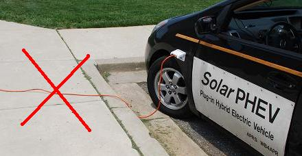 . 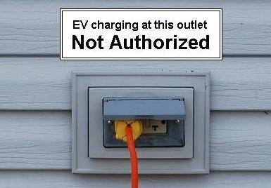 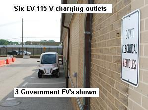
Safety and FOUO: Any concerns over unsafe routing of the charging cord can be easily met by marking any such tempting outlets in unsafe areas with a EV NOT AUTHORIZED label on the outlet as shown above. The Naval Academy already has six 120 V outlets and one expensive fast L2 charger for its official EV's shown to the right and so any safety issues with charge cords have already been apparently resolved. Of course, the Academy's cost to add these six $15 outlets is rumored to have cost $6000 of appropriated funds, plus many more thousands for the fast L2 charger and therefore (GAO ruling) they cannot be used for charging personal vehicles (see discussion below) and until this is resolved, there should be a Employee EV's Not Authorized" sign.
Double the Range: Allowing EV employees, however, to payin-to-pluging to existing outlets is truly a no-cost program that will revolutionize the progress towards electrification of transportation and its concomittant environmental and economic benefits by doubling the range of EV's for employees at virtually no cost. In contrast, to double the range of an EV by buying a bigger battery, the Tesla double range battery adds over $40,000 to the price of the car! That example alone should convince anyone of the value of charging-at-work as a powerful leverage to our future of EV commuting. Having the Government authorize this for their own employees can also demonstrate to other large employer facilities the benefits of such an approach on their campuses.
How can we get this simple no-cost approach implemented at USNA?
USNA has the opportunity to get out in front of EV demand and provide leadership to cost-effective development of EV infrastructure using what we already have now. The 120v outlets exist. They can fully charge over 90% of all EV commuter's driving ranges. Let's use them!
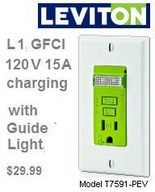 The Procedure for Reimbursing the Government for Individual use of Government Facilities exists! Just find your local instruction, fill out the form, write the check, and submit it to your chain of command. Done!
FOCUS ON THE 120v OUTLETS FIRST! Too many government initiatives are too focused on the expensive Level-2 EV quick charging stations and promoting public EV charging infrastructure as a way to combat Range Anxiety. This focus on public charging is doing more to underimine the adoption of EV's than to help them. Range anxiety is a self-fulfilling prophecy if we keep focusing on the need for routine public charging. People who are dependent on public charging SHOULD PROBABLY NOT BE PURCHASING EV's AT THIS TIME. There are 205 Million other Americans that CAN make use of EV's right now with their own home outlets (and at work).
Far More Outlets at Home and Work: Some home/outdoor GFCI outlets are very old and do not meet the more recent specs that are less sensitive to transients. If your old GFCI outlet trips when you plug in your EV, consider replacing it with the $29 GFCI designed specifically for EV charging as shown to the right and available by order from Home Depot.
By 2015 there were only about 35,000 Public charging stations by today's estimates, but right now today, there are 205 million charging outlets at home and another 2 million where we work. This is 1800 times more EV charging outlets than there are gas stations now. Two-thirds of all Americans (205 Million) live in single family detached homes with both a parking space and a 120v charging outlet. For cars parked at home for 8 hours overnight most simply do not need ANY new charging infrastructure for these 205 million potential EV drivers. Especially if we can extend the 8 hours charging at home with another 8 hours 120v L1 charging at work!
We are too focused on installing Public Chargers if it causes us to ignore the 2 orders of magnitude more 120v charging capabilities that we already have!
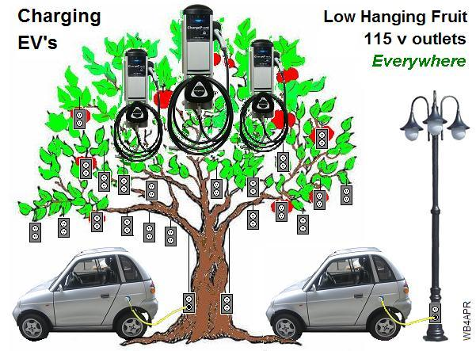 LOW HANGING FRUIT: These existing 120v outlets at work are the low hanging fruit. There are plenty of outlets out there already and there are millions of parking light poles which can support an existing 120v outlet for slow Level-1 8 hour charging of EV's while people work. This DOUBLES the range of the EV's for these employees.
The expensive high-cost Level-2 quick charger at work locations and campuses makes little sense for the employee. The workday model for the quick charge commuter is flawed. Employers are not going to want their people doing musical-cars in the parking lot every hour and rotating one EV off the charging station, and then rotating another one in its place? No. We need 120v convenience outlets on every lamp post and in many cases they already exist. We simply need the means for EV owners to pre-pay for the electricity (Charging pass) so that then they get permission to plug in.
Charging Station Blocking: The frustration of EV's parked and blocking a charger long after they are fully charged is the ultimate downside of Level-2 chargers at work. People come to work, and usually do not want to bother changing parking places during the day. They come in the morning and leave 8 hours later. This leaves Level-2 chargers unused 83% of the time. And by definition, it leaves 83% of the other EV owners frustrated! If the Level-1 120v outlet on the lamp pole beside their parking place can charge them in under 8 hours at only a 12 amp draw, this is far less of an impact than the 50 amp charger in one specialized parking place that does it in 1 hours, but only one car at a time and then is blocked until someone comes to move the car!
EMPLOYEE AND PARKING LOT CHARGING: Level-1 120v charging is ideal for parking lots and parking garages where cars are expected to spend most of the day in the same spot. They do not need high current fast charging stations but can charge all the cars over simple 15 amp 120v circuits during the day. By placing all the circuit breakers in a central distribution box, the individual parking spots only need a standard 120v GFCI outlet as shown below. By reducing the costs of the garage installation in this manner, large numbers of EV's can be accomodated immediately at very little cost.
Payin-to-Plugin SUMMARY: The Level-1 120v outlets exist, or can be installed at minimal cost. Lets go for the low hanging fruit with respect to EV charging and enable the existing 120v outlets scattered around first. Enabling a Payin-to-Plugin system on all campuses can jump-start EV acceptance overnight at no cost.
You can also download a condensed one-page(f/b) summary handout of this web page (see top of page).
Bob Bruninga
IEEE National Committee on Transportation and Aerospace
EV Association of DC
wb4apr at amsat dot org
See also my Solar PHEV, a work in progress...
.
See Sitemap to over 450 of Bob's othe web pages.
.
{kind=link}
{kind=link}